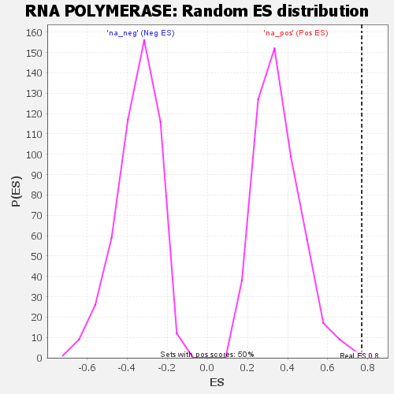

| | | Dataset | GSEA RNK clr Maaslin2 MucosalvsLuminal KO - Ileum.rnk |
| Phenotype | NoPhenotypeAvailable |
| Upregulated in class | na_pos |
| GeneSet | RNA POLYMERASE |
| Enrichment Score (ES) | 0.7694621 |
| Normalized Enrichment Score (NES) | 2.1733844 |
| Nominal p-value | 0.001984127 |
| FDR q-value | 0.0076315566 |
| FWER p-Value | 0.082 |
Table: GSEA Results Summary
 Fig 1: Enrichment plot: RNA POLYMERASE
Fig 1: Enrichment plot: RNA POLYMERASE
Profile of the Running ES Score & Positions of GeneSet Members on the Rank Ordered List

Fig 2: RNA POLYMERASE: Random ES distribution
Gene set null distribution of ES for RNA POLYMERASE